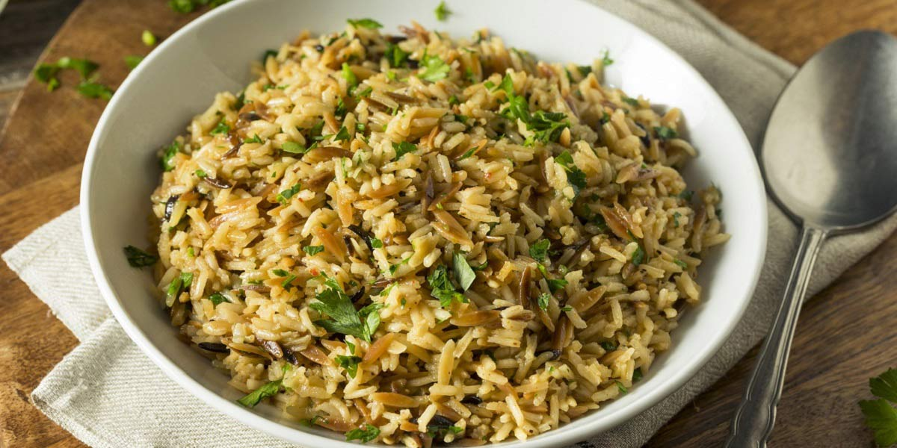

Pilaf Rice
Recipe Specification
Ingredients List
| Ingredients | Quantity |
|---|---|
| Basmati Rice | 450g |
| Table Salt | 1 tsp |
| Unsalted Butter | 50g |
| Cardamom Pods | 3 Pods |
| Cinnamon Stick | 1 Stick |
| Lemon | 1x1 |
| White Onion | 1x1 |
| Cloves | 8x1 |
| Bay Leaf | 2 leaves |
| Vegetable Stock | 600ml |
Yield: 8-10 portions
Preparation
- Peel and finely dice white onion.
- Wash basmati rice 3-4 time with cold running water. Leave rice to soak for 30-40 minutes.
Cooking Instructions
- Place medium sized pan over a medium/high heat. Add 20 g of butter to the pan and sweat off the onions for 5-6 minutes.
- Add cardamom pods, cloves, cinnamon stick and bay leaves to the pan. Cook for 3 minutes until spice become aromatic.
- Add rice, vegetable stock and salt before bring to the boil, reducing to the simmer, covering with a lid and cooking for 10 minutes. Wrap lid with a tea towel to reduce gap between it and the pan to ensure fluffier rice.
- After 10 minute, remove pan from heat and leave the lids on for a further 5 minutes before serving.

Serving Suggestions
Pilaf rice is a great base to curries, daal and kebabs.
Storing instructions
Cool to room temperature before placing in an air-tight container and in the fridge. Consume rice within 4 days of making.
Reheating Instructions
Place in the microwave for 2-3 minutes.